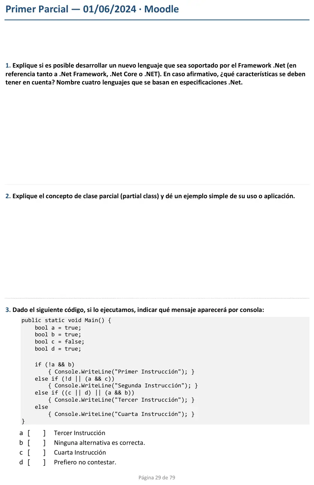
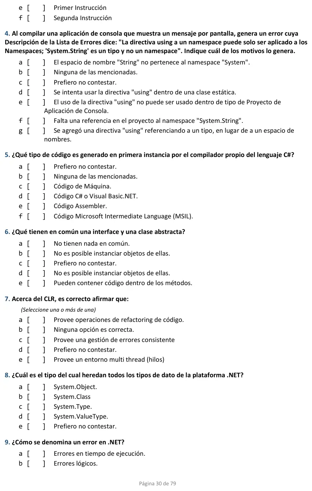
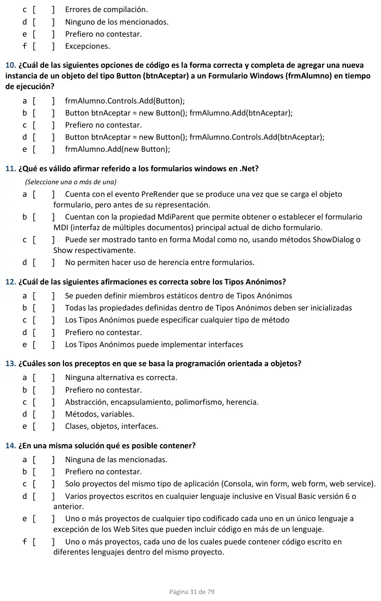
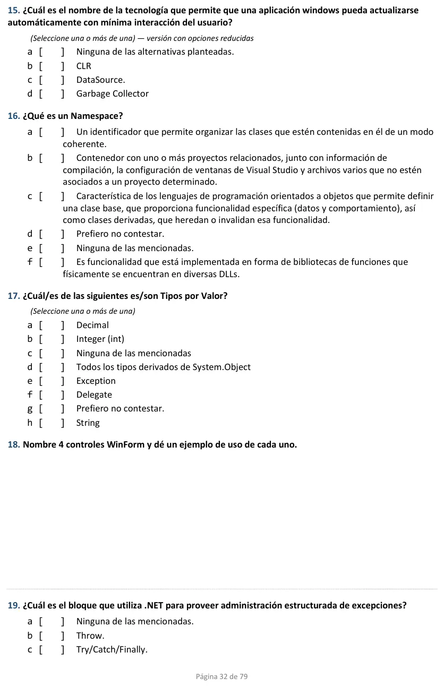
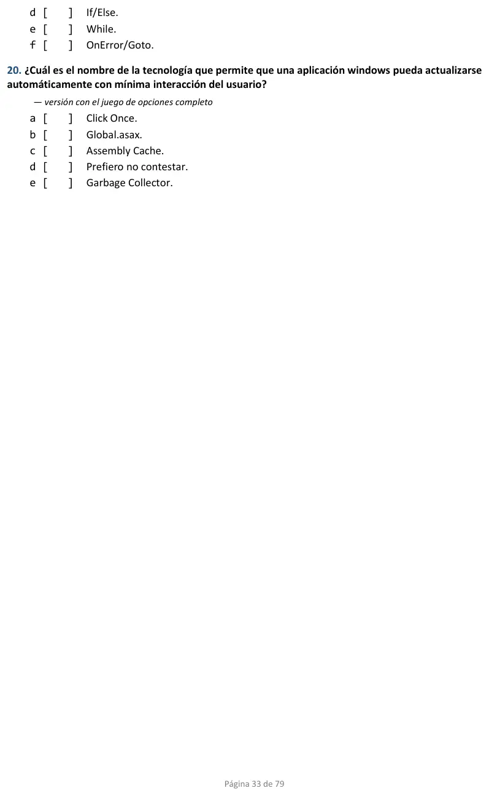

1° parcial en aula virtual, 01/06/2024
1° parcial, 01/06/2024
Enunciado










Preguntas con opciones
Salen de este examen, adaptadas. Dejalas para el final, porque las opciones pueden dar pistas.
- 1
¿Qué genera en primera instancia el compilador de C#?
Se tomó: 1° parcial 01/06/2024, adaptada
El compilador pasa el código fuente a un lenguaje intermedio. El JIT lo convierte a nativo recién en tiempo de ejecución.
- 2
¿De qué tipo derivan todos los tipos de .NET?
Se tomó: 1° parcial 01/06/2024, adaptada
El apunte lo dice con esas palabras: todos los tipos derivan del tipo base System.Object.
- 3
¿Para qué se usa un namespace?
Se tomó: 1° parcial 01/06/2024, adaptada
Esa es la definición del apunte. Liberar memoria es tarea del Garbage Collector.
- 4
¿Cuáles son los pilares de la orientación a objetos, según la cátedra?
Se tomó: 1° parcial 01/06/2024, adaptada
La presentación los enumera así. Los otros grupos mezclan conceptos que no son pilares.
- 5
¿Con qué palabras reservadas se controlan las excepciones en C#?
Se tomó: 1° parcial 01/06/2024, adaptada
El apunte nombra try-catch-finally como los bloques de control de excepciones.
- 6
¿Qué tienen en común una interfaz y una clase abstracta?
Se tomó: 1° parcial 01/06/2024, adaptada
De las clases abstractas dice que no pueden ser instanciadas. De las interfaces, que no se pueden crear instancias.
- 7
¿Qué tecnología permite actualizar sola una aplicación Windows, con mínima interacción del usuario?
Se tomó: 1° parcial 01/06/2024 y 2° parcial 14/09/2026, adaptada
La presentación la define con esas palabras. SignalR es de Blazor Server y GDI+ es para gráficos.
- 8
¿Qué método abre un formulario de manera modal?
Se tomó: 1° parcial 01/06/2024, adaptada
Show() lo abre sin modo modal. Load y Paint son eventos del formulario.
Propuesta de respuesta
Respuesta no verificada. La propuso Luta Studios con inteligencia artificial y ningún docente la revisó. Puede tener errores.
Las tres para desarrollar
1. Sí, se puede. Cada lenguaje .NET tiene su propio compilador, que pasa el código fuente a CIL (o MSIL) y genera los metadatos. Después el JIT del CLR lo pasa a código nativo al ejecutar. Lo que hay que tener en cuenta lo dice el apunte, «para generarlo, el compilador se basa en la especificación CLS (Common Language Specification) que determina las reglas necesarias para crear el código CIL compatible con el CLR» (Unidad 1, Capítulo 1, Teoría, pág. 11).
- El compilador tiene que generar CIL y metadatos, no código de máquina.
- Los tipos se declaran, se usan y se administran como dice el CTS.
- El lenguaje cumple las reglas del CLS, el subconjunto común que asegura que lo escrito en un lenguaje se pueda usar desde otro.
Cuatro lenguajes de la plataforma son C#, Visual Basic .NET, C++ y F#. No pongas Pascal, porque la corrección de este examen lo marcó como no soportado.
2. Una clase parcial deja separar la implementación de una clase en varios archivos fuente, que el compilador junta en una sola clase. Cada parte se declara con partial. El ejemplo más claro es un formulario de Windows Forms. En un archivo está el código que escribís vos y en el otro, el que genera el diseñador de Visual Studio en InitializeComponent.
// Form1.cs, lo que escribís vos
public partial class Form1 : Form
{
public Form1()
{
InitializeComponent();
}
}
// Form1.Designer.cs, lo que genera el diseñador
partial class Form1
{
private Button btnAceptar;
private void InitializeComponent()
{
this.btnAceptar = new Button();
this.btnAceptar.Text = "Aceptar";
this.Controls.Add(this.btnAceptar);
}
}18. Cuatro controles de la presentación de la Unidad 3 con un uso de cada uno.
| Control | Ejemplo de uso |
|---|---|
Button | Un botón «Guardar» que da de alta un alumno al hacer clic |
TextBox | Escribir el nombre del alumno |
ComboBox | Elegir la carrera de una lista de opciones |
DataGridView | Mostrar en una tabla el listado de alumnos |
Las de opciones
| N.° | Respuesta | Por qué |
|---|---|---|
| 3 | a, «Tercer Instrucción» | Con c en false y las demás en true, !a && b da false y no evalúa b. !d || (a && c) da false. En (c || d) || (a && b), c || d ya es true y por cortocircuito no se evalúa lo demás |
| 4 | g | La directiva using es para namespaces, y System.String es un tipo |
| 5 | f, MSIL | El compilador genera código intermedio. El JIT lo pasa a nativo recién al ejecutar |
| 6 | «No es posible instanciar objetos de ellas» | Las opciones b y d dicen lo mismo. Ni la clase abstracta ni la interfaz se pueden instanciar |
| 7 | c y e | El CLR maneja las excepciones (Exception Manager) y los hilos (Thread Support). El refactoring es de Visual Studio, no del CLR |
| 8 | a, System.Object | «Todos los tipos derivan del tipo base System.Object» |
| 9 | f, Excepciones | Una excepción es una alteración del flujo normal de ejecución. Las predefinidas derivan de System.Exception |
| 10 | d | Se instancia el Button y se agrega a la colección Controls del formulario. Sin Controls, no compila |
| 11 | b y c | Show lo muestra no modal y ShowDialog, modal. MdiParent es del formulario hijo de una aplicación MDI. PreRender es de las páginas web, no de los formularios. Un formulario es una clase que hereda de Form, así que se puede heredar de otro formulario |
| 12 | b | Un tipo anónimo se crea dando valor a cada propiedad, como new { Name = "Jenny", Age = 31 } |
| 13 | c | Abstracción, encapsulamiento, polimorfismo y herencia, los pilares que da la cátedra |
| 14 | e | Una solución tiene uno o más proyectos de cualquier tipo, y cada proyecto es de un solo lenguaje. Los sitios web son la excepción |
| 15 | a, «Ninguna de las alternativas planteadas» | La respuesta es ClickOnce, que no está entre las opciones de esta versión |
| 16 | a | Un namespace declara un ámbito que organiza el código. La b describe una solución y la c, la herencia |
| 17 | a y b | Decimal e int son tipos integrados por valor. String, Exception y Delegate son por referencia, y no todo lo que deriva de System.Object es por valor |
| 19 | c, Try/Catch/Finally | Son los bloques de control de excepciones de C# |
| 20 | a, Click Once | Permite actualizaciones automáticas con mínima interacción del usuario |
Respuesta no verificada. Puede tener errores.
Se armó con 1° parcial (la plataforma .NET, Compilación, Tipos por valor y por referencia, Namespaces, Operadores lógicos y cortocircuito, Excepciones, Objetos en C#, Clases parciales y LINQ) y 2° parcial (Windows Forms, Controles, Controles en tiempo de ejecución, Abrir un formulario y ClickOnce).
Quedó en duda: Las hojas son del compendio de enunciados sin marcas, y en la 15 dice «versión con opciones reducidas», por eso ClickOnce no está entre sus opciones. El material no dice con esas palabras que un error en .NET se llama excepción (9), ni nombra MdiParent (11), ni habla de qué lenguajes entran en una solución (14). De los tipos anónimos (12) solo trae el ejemplo, y que no lleven miembros estáticos, métodos ni interfaces sale del lenguaje C#. En la 6, las opciones b y d tienen el mismo texto. En la 18 cualquier control de la presentación de la Unidad 3 vale.
¿Cómo te fue?
Marcá cada tema del examen. Las preguntas con opciones ya se corrigieron solas.
- CLR y MSILCommon Language Runtime (CLR), en 1° parcial
- TiposTipos por valor y por referencia, en 1° parcial
- ObjetosObjetos en C#, en 1° parcial
- Windows FormsWindows Forms, en 2° parcial
- ClickOnceClickOnce, en 2° parcial